OI Wiki · prijevod · Teorija grafovaOI Wiki · translation · Graph theory
Sparivanje u grafovimaGraph matching
Sadržaj
Uvod
Sparivanje (matching) ili nezavisni skup bridova skup je bridova grafa koji nemaju zajedničkih krajeva. Algoritmi za sparivanje u grafovima često se koriste u informatičkim natjecanjima i grubo se dijele na dvije vrste: maksimalno sparivanje i sparivanje maksimalne težine. Budući da je sparivanje u bipartitnim grafovima ekvivalentno problemu toka u mreži, ima dobra svojstva i razmjerno se lako obrađuje, ovdje ćemo obje vrste algoritama najprije predstaviti na bipartitnim grafovima, a zatim raspraviti algoritme za opće grafove.
Sparivanje u grafu
Neka je \(G=(V,E)\) neusmjeren graf, gdje je \(V\) skup vrhova, a \(E\) skup bridova. Ako skup bridova \(M\subseteq E\) ne sadrži petlje i nikoja dva brida nemaju zajednički vrh, skup bridova \(M\) zove se sparivanje (matching) ili nezavisni skup bridova (independent edge set) grafa \(G\). Brid \(e\in E\) koji se pojavljuje u sparivanju \(M\) zove se spareni brid, a inače nespareni brid. Analogno, vrh \(v\in V\) koji je kraj nekog sparenog brida zove se spareni vrh, a inače nespareni vrh.
Veličina sparivanja \(M\) broj je bridova koje sadrži. Za sparivanja u (težinskim) neusmjerenim grafovima često se razmatraju sljedeći pojmovi:
-
Maksimalno sparivanje po inkluziji (maximal matching): sparivanje kojemu se ne može dodati nijedan spareni brid. Ono ne mora biti sparivanje najveće veličine.
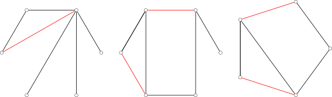
-
Najveće sparivanje (maximum matching ili maximum cardinality matching): sparivanje s najviše sparenih bridova. Može ih biti više, ali je broj bridova najvećeg sparivanja određen i ne može premašiti polovicu broja vrhova grafa.
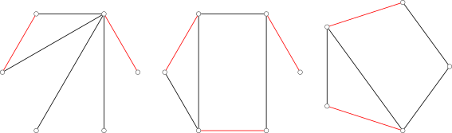
-
Sparivanje maksimalne težine (maximum weight matching): u težinskom grafu, sparivanje s najvećim zbrojem težina bridova.
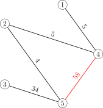
-
Najveće sparivanje maksimalne težine (maximum weight maximum cardinality matching): uz uvjet da je broj sparenih bridova najveći, sparivanje s najvećim zbrojem težina. Dakle, među svim najvećim sparivanjima ono s najvećim zbrojem težina.
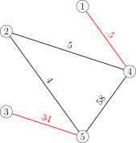
-
Savršeno sparivanje (perfect matching): sparivanje u kojemu je svaki vrh sparen. Savršeno sparivanje uvijek je i najveće sparivanje. Potpun graf s parnim brojem vrhova nužno ima savršeno sparivanje.
-
Gotovo savršeno sparivanje (near-perfect matching): sparivanje s točno jednim nesparenim vrhom. To je moguće samo kad graf ima neparan broj vrhova. I gotovo savršeno sparivanje uvijek je najveće sparivanje. Potpun graf s neparnim brojem vrhova nužno ima gotovo savršeno sparivanje.
Problemi sparivanja u natjecateljskom programiranju uglavnom se odnose na najveće sparivanje ili sparivanje maksimalne težine.
Povećavajući put
U algoritmima za sparivanje povećavajući put središnja je struktura kojom se sparivanje poboljšava.
Definicija
Za graf \(G=(V,E)\) i njegovo sparivanje \(M\) možemo definirati sljedeće dvije vrste (jednostavnih) putova:
- alternirajući put (alternating path) put je u kojem se spareni i nespareni bridovi izmjenjuju;
- povećavajući put (augmenting path) alternirajući je put koji počinje i završava u nesparenom vrhu.
Budući da na povećavajućem putu ima \(1\) nespareni brid više nego sparenih, broj bridova povećavajućeg puta uvijek je neparan. Ako na povećavajućem putu zamijenimo uloge sparenih i nesparenih bridova, on ostaje alternirajući put, a broj sparenih bridova poraste za \(1\). Postupak traženja povećavajućeg puta i njegova obrtanja radi povećanja sparivanja zove se povećanje (augmentation). Matematičkim jezikom, povećanje je simetrična razlika sparivanja \(M\) i povećavajućeg puta \(P\), čime dobivamo novo sparivanje \(M\oplus P\).
Sljedeća slika prikazuje kako nakon jednog povećanja broj sparenih bridova raste s \(2\) na \(3\).
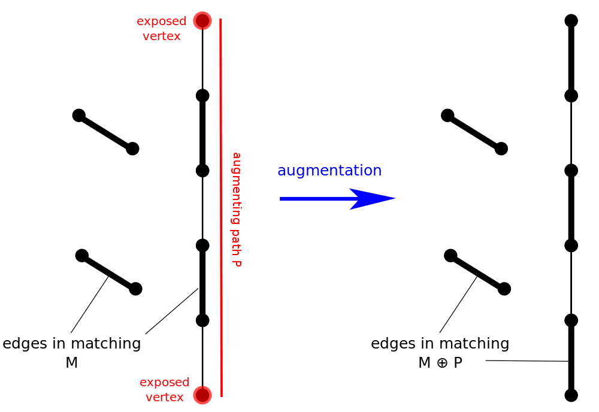
Bergeova lema
Bergeova lema kaže da je metoda poboljšavanja sparivanja povećavajućim putovima dovoljna. Drugim riječima, kad se povećavajući put više ne može naći, dobiveno je najveće sparivanje.
Bergeova lema
Za graf \(G=(V,E)\) i njegovo sparivanje \(M\), sparivanje \(M\) je najveće ako i samo ako ne postoji povećavajući put u odnosu na \(M\).
Dokaz
Već smo pokazali da je, kad postoji povećavajući put \(P\), sparivanje \(M\oplus P\) veće od \(M\), pa \(M\) sigurno nije najveće.
Obrnuto, treba pokazati da ako postoji sparivanje \(M'\) veće od \(M\), onda nužno postoji povećavajući put \(P\) u odnosu na \(M\). Promotrimo simetričnu razliku \(M\oplus M'\). Stupnjevi vrhova u grafu \((V,M\oplus M')\) mogu biti samo \(0\), \(1\) ili \(2\); komponente povezanosti takvog grafa nužno su putovi, ciklusi ili izolirani vrhovi. Štoviše, dva brida susjedna vrhu stupnja \(2\) nužno dolaze iz različitih sparivanja, pa je u tim ciklusima broj bridova iz \(M\) jednak broju bridova iz \(M'\). Budući da je \(M'\) veće od \(M\), postoji barem jedan put u kojem je bridova iz \(M'\) više nego iz \(M\); označimo ga \(P\). Tada su početak i kraj puta \(P\) nespareni vrhovi za \(M\), a \(P\) je alternirajući put u odnosu na \(M\), pa je \(P\) nužno povećavajući put u odnosu na \(M\). Time je dokaz završen.
Iz ovog teorema slijedi osnovna ideja za traženje najvećeg sparivanja:
- prolazimo kroz sve nesparene vrhove i tražimo povećavajuće putove dok ih više ne možemo naći.
Zapravo, nakon svakog povećanja nije potrebno iznova prolaziti sve nesparene vrhove. Tijekom cijelog postupka traženja najvećeg sparivanja svaki vrh dovoljno je obraditi samo jednom.
Dokaz
Dovoljno je pokazati: ako u trenutku kad obrada stigne do vrha \(v\) ne postoji povećavajući put s početkom u \(v\), onda ni nakon nekoliko rundi povećanja ne postoji povećavajući put s početkom u \(v\). To znači da, iako povećanje mijenja sparivanje, nije potrebno ponovno provjeravati već obrađene nesparene vrhove.
Pretpostavimo suprotno. Dakle, neka je \(v\) već obrađeni nespareni vrh i neka je nakon povećanja duž povećavajućeg puta \(P\) od \(u\) do \(w\) u nekoj rundi nastao povećavajući put \(P'\) s početkom u \(v\) koji prije nije postojao. Tada put \(P'\) nužno ima zajednički brid s \(P\); inače povećanje duž \(P\) ne bi promijenilo stanje sparenosti bridova na \(P'\), pa \(P'\) ne bi bio novi povećavajući put nastao tim povećanjem.
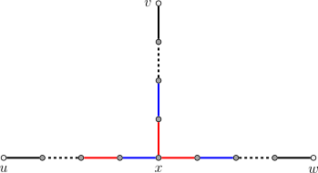
(Na slici crna boja označava nesparene bridove, a crvena i plava različita stanja sparenosti.)
Neka je \(x\) prvi vrh iz \(P\) do kojeg dolazimo krećući od \(v\) duž puta \(P'\). Budući da je alternirajući put od \(v\) do \(x\) postojao i prije ovog povećanja, a tada nije postojao povećavajući put s početkom u \(v\), \(x\) je nužno spareni vrh, pa ne može biti ni \(u\) ni \(w\). Stoga su na povećavajućem putu \(P\) dva brida susjedna vrhu \(x\) i njihova su stanja sparenosti suprotna. To znači da, bez obzira na stanje sparenosti brida kojim alternirajući put s početkom u \(v\) dolazi do \(x\), taj se put može duž \(P\) produljiti do \(u\) ili do \(w\). Dakle, povećavajući put s početkom u \(v\) postojao je već prije povećanja, što je u suprotnosti s pretpostavkom.
Alternirajuće stablo
Još jedan pojam usko vezan uz povećavajuće putove jest alternirajuće stablo. To je stablo koje nastaje tijekom DFS-a ili BFS-a iz nesparenog vrha \(r\) pri traženju povećavajućeg puta.
Za graf \(G=(V,E)\) i njegovo sparivanje \(M\), ako je podgraf \(H\subseteq G\) stablo s korijenom u nesparenom vrhu \(r\) i put koji povezuje \(r\) s bilo kojim \(v\in V(H)\) alternirajući je put, onda \(H\) zovemo alternirajuće stablo (alternating tree). Vrhove parne dubine u stablu zovemo parnim vrhovima, a vrhove neparne dubine neparnim vrhovima.
Sljedeća slika prikazuje jedno alternirajuće stablo koje može nastati BFS-om iz nesparenog vrha \(1\). (Na slici su crveni bridovi spareni, a crni nespareni; tamni su vrhovi spareni, a svijetli nespareni.)
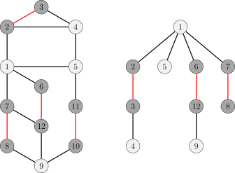
Postojanje savršenog sparivanja
U teoriji sparivanja postoje dva važna teorema o egzistenciji kojima se može utvrditi postoji li savršeno sparivanje u bipartitnom ili općem grafu.
Hallov teorem
Neka je \(G=(X,Y,E)\) bipartitan graf i \(|X|\le |Y|\). Ako su za sparivanje \(M\) grafa \(G\) svi vrhovi iz \(X\) spareni, \(M\) zovemo \(X\)-savršeno sparivanje, a ponekad kraće savršeno sparivanje (bipartitnog grafa \(G\)). To je najveće sparivanje koje se u bipartitnom grafu može postići. Hallov teorem daje nužan i dovoljan uvjet za postojanje takvog sparivanja.
Hallov teorem kaže da \(X\)-savršeno sparivanje sigurno postoji čim je za svaki podskup od \(X\) u \(Y\) osigurano dovoljno vrhova koji se s njim mogu spariti.
Hallov teorem
Neka je \(G=(X,Y,E)\) bipartitan graf i \(|X|\le |Y|\). Za svaki \(W\subseteq X\) neka \(N_G(W)\) označava skup svih vrhova grafa \(G\) susjednih nekom vrhu iz \(W\). Tada \(X\)-savršeno sparivanje postoji ako i samo ako \(|W|\le |N_G(W)|\) vrijedi za sve \(W\subseteq X\).
Dokaz
Uvjet je očito nužan. Ako \(X\)-savršeno sparivanje \(M\) postoji, svaki vrh iz \(X\) sparen je s različitim vrhom iz \(Y\). Skup \(N_G(W)\) sadrži barem vrhove sparene s vrhovima iz \(W\), pa mu je veličina barem \(|W|\).
Uvjet je i dovoljan. Pretpostavimo da \(X\)-savršeno sparivanje ne postoji; tada postoji najveće sparivanje \(M\) u kojem je neki vrh \(v\in X\) i dalje nesparen. Neka je \(Z\) skup svih vrhova dostupnih alternirajućim putovima iz \(v\), te \(S=Z\cap X\), \(T=Z\cap Y\). Svi vrhovi iz \(S\setminus\{v\}\) nužno su spareni, jer je \(G\) bipartitan pa alternirajući put iz \(v\) do vrha iz \(X\) ima parnu duljinu i njegov je posljednji brid nužno spareni brid; i svi vrhovi iz \(T\) nužno su spareni, jer bi inače postojao povećavajući put, što je po Bergeovoj lemi u suprotnosti s time da je \(M\) najveće. Budući da su svi spareni, a sparivanje je moguće samo između \(X\) i \(Y\), vrhovi iz \(S\setminus\{v\}\) i iz \(T\) u bijekciji su, tj. \(|T|=|S|-1\). Istodobno, budući da su vrhovi iz \(T\) spareni s vrhovima iz \(S\), vrijedi barem \(T\subseteq N_G(S)\); no za bilo koji \(u\in N_G(S)\), ako je susjedan vrhu \(v'\) iz \(S\), produljenjem alternirajućeg puta do \(v'\) dobivamo alternirajući put do \(u\), pa je \(u\in T\): dakle \(T=N_G(S)\). Ovi argumenti pokazuju \(|N_G(S)|<|S|\), što je u suprotnosti s uvjetom Hallova teorema. Time je pokazano da \(X\)-savršeno sparivanje postoji.
Korolar
Svaki \(k\)-regularan (\(k\ge 1\)) bipartitan graf ima savršeno sparivanje.
Dokaz
U regularnom bipartitnom grafu svi vrhovi imaju isti stupanj, neka je \(k\ge 1\). Najprije provjerimo da vrijedi Hallov uvjet, tj. da za svaki \(W\subseteq X\) vrijedi \(|N_G(W)|\ge |W|\). Broj bridova susjednih vrhovima iz \(W\) jednak je \(k|W|\), a svaki vrh iz \(N_G(W)\) susjedan je najviše \(k\) od tih bridova, pa nužno \(k|W|\le k|N_G(W)|\), tj. \(|W|\le |N_G(W)|\). Posebno, \(|X|\le |Y|\); a kako su \(X\) i \(Y\) simetrični, vrijedi \(|X|=|Y|\). To znači da je u regularnom bipartitnom grafu \(X\)-savršeno sparivanje ujedno savršeno sparivanje. Budući da Hallov teorem jamči postojanje \(X\)-savršenog sparivanja, postoji i savršeno sparivanje.
Tutteov teorem
Tutteov teorem daje nužan i dovoljan uvjet za postojanje savršenog sparivanja u općem grafu. Uvjet proizlazi iz izravnog zapažanja: graf s neparnim brojem vrhova sigurno nema savršeno sparivanje.
Tutteov teorem
Graf \(G=(V,E)\) ima savršeno sparivanje ako i samo ako za svaki \(U\subseteq V\) vrijedi \(\operatorname{odd}(G-U)\le |U|\), gdje \(G-U\) označava podgraf dobiven brisanjem vrhova iz \(U\) i njima susjednih bridova iz \(G\), a \(\operatorname{odd}(G-U)\) broj komponenata povezanosti podgrafa \(G-U\) s neparnim brojem vrhova.
Dokaz
Dovoljno je razmatrati jednostavne grafove, jer višestruki bridovi i petlje ne utječu ni na Tutteov uvjet ni na postojanje savršenog sparivanja.
Nužnost uvjeta razmjerno je lagana. Pretpostavimo da postoji savršeno sparivanje \(M\). Za bilo koji \(U\subseteq V\), nakon brisanja vrhova iz \(U\) iz grafa \(G\), svaka komponenta povezanosti s neparnim brojem vrhova ima barem jedan vrh koji se ne može spariti s vrhom iste komponente, pa se ti vrhovi mogu spariti samo s vrhovima iz \(U\). Da bi takvo sparivanje postojalo, mora vrijediti barem \(\operatorname{odd}(G-U)\le |U|\). To je Tutteov uvjet.
Dovoljnost uvjeta nešto je složenija. Pretpostavimo da \(G\) zadovoljava Tutteov uvjet, ali nema savršeno sparivanje. Budući da dodavanje bilo kojeg brida u \(G\) čuva Tutteov uvjet, bez smanjenja općenitosti neka je \(G\) maksimalan takav graf, tj. \(G\) nema savršeno sparivanje, ali dodavanjem bilo kojeg još nepostojećeg brida \(e\) graf \(G+e\) ima savršeno sparivanje. Neka je \(U\subseteq V\) skup svih vrhova stupnja \(|V|-1\). Može se dokazati da je svaka komponenta povezanosti grafa \(G-U\) potpun graf. Iz toga se može konstruirati savršeno sparivanje grafa \(G\): najprije uzmemo najveće sparivanje svake komponente od \(G-U\), pri čemu nespareni vrh ostaje samo u komponentama s neparnim brojem vrhova; te nesparene vrhove sparimo s vrhovima iz \(U\); budući da je broj vrhova grafa \(G\) paran (u Tutteovu uvjetu uzmemo \(U=\varnothing\)), i broj preostalih nesparenih vrhova u \(U\) paran je, pa ih sparimo u parove. Ta kontradikcija pokazuje da ne postoji \(G\) koji zadovoljava Tutteov uvjet, a nema savršeno sparivanje.
Ključno je dokazati da je svaka komponenta povezanosti grafa \(G-U\) potpun graf. Pretpostavimo suprotno. Neka vrhovi \(x,y,z\) pripadaju takvoj komponenti, pri čemu \((x,y)\in E\), \((y,z)\in E\), \((x,z)\notin E\). Nadalje, budući da \(y\notin U\), nužno postoji \(w\in V\setminus U\) takav da \((y,w)\notin E\). Zbog maksimalnosti grafa \(G\), u grafovima \(G+(x,z)\) i \(G+(y,w)\) postoje savršena sparivanja \(M_1\) odnosno \(M_2\). Promotrimo njihovu simetričnu razliku \(M_1\oplus M_2\). Budući da su stupnjevi svih vrhova u grafu \((V,M_1\oplus M_2)\) ili \(0\) ili \(2\), \(M_1\oplus M_2\) zapravo je disjunktna unija nekoliko parnih ciklusa, a svaki se sastoji od naizmjeničnih sparenih bridova iz \(M_1\) i \(M_2\). Bez smanjenja općenitosti neka je \((x,z)\in M_1\) i \((y,w)\in M_2\), jer je inače \(M_1\) ili \(M_2\) već savršeno sparivanje grafa \(G\); stoga se oba ta brida pojavljuju u \(M_1\oplus M_2\).
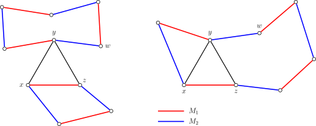
Kako slika prikazuje, moguća su dva slučaja:
- \((x,z)\) i \((y,w)\) leže na različitim ciklusima (lijevo na slici): neka je \(C\) ciklus na kojem leži \((y,w)\); tada je skup bridova \(M_2\oplus C\) savršeno sparivanje grafa \(G\);
- \((x,z)\) i \((y,w)\) leže na istom ciklusu (desno na slici): zbog simetrije neka ciklus redom prolazi kroz \(x,y,w,z\); tada možemo uzeti put \(P\) na ciklusu od \(y\) preko \(w\) do \(z\), označiti \(\{(y,z)\}\cup P\) kao ciklus \(C\), i tada je skup bridova \(M_2\oplus C\) također savršeno sparivanje grafa \(G\).
U oba slučaja dobivamo kontradikciju s izborom grafa \(G\). Ta kontradikcija pokazuje da je svaka komponenta povezanosti grafa \(G-U\) potpun graf.
Korolar
Svaki 3-regularan graf bez mostova ima savršeno sparivanje.
Dokaz
Da bismo provjerili Tutteov uvjet, uzmimo proizvoljan \(U\subseteq V\); treba dokazati \(\operatorname{odd}(G-U)\le |U|\). Neka su \(G_1,\cdots,G_n\) sve komponente povezanosti grafa \(G-U\) s neparnim brojem vrhova. Neka je \(m_i\) broj bridova koji povezuju vrhove iz \(G_i\) s vrhovima iz \(U\). Jednostavnim prebrojavanjem dobivamo
Dakle, \(m_i\) je nužno neparan. Budući da \(G\) nema mostova (tj. reznih bridova), vrijedi \(m_i\ge 3\). Iz toga slijedi
Dakle, Tutteov uvjet vrijedi i graf \(G\) nužno ima savršeno sparivanje.
Uobičajeni algoritmi
Jedan od osnovnih problema kombinatorne optimizacije jest nalaženje najvećeg sparivanja i sparivanja maksimalne težine u grafu.
Najveće sparivanje u bipartitnom grafu
Vidi stranicu Najveće sparivanje u bipartitnom grafu.
U netežinskom bipartitnom grafu problem se može riješiti Kuhnovim algoritmom u vremenu \(O(|V||E|)\) ili Hopcroft–Karpovim algoritmom u vremenu \(O(|V|^{1/2}|E|)\).
Sparivanje maksimalne težine u bipartitnom grafu
Vidi stranicu Sparivanje maksimalne težine u bipartitnom grafu.
U težinskom bipartitnom grafu problem se može riješiti mađarskim algoritmom. Ako se pri traženju najkraćeg puta koristi Bellman–Fordov algoritam, složenost je \(O(|V|^2|E|)\); uz Dijkstrin algoritam s Fibonaccijevom gomilom problem se rješava u vremenu \(O(|V|^{2}\log {|V|}+|V||E|)\).
Najveće sparivanje u općem grafu
Vidi stranicu Najveće sparivanje u općem grafu.
U netežinskom općem grafu problem se može riješiti Edmondsovim blossom algoritmom u vremenu \(O(|V|^2|E|)\).
Sparivanje maksimalne težine u općem grafu
Vidi stranicu Sparivanje maksimalne težine u općem grafu.
U težinskom općem grafu problem se može riješiti Edmondsovim blossom algoritmom u vremenu \(O(|V|^2|E|)\).
Povezani problemi
Najveće sparivanje (maksimalne težine) usko je povezano s drugim problemima teorije grafova. U ovom odjeljku razmatramo samo opće grafove; za rezultate o bipartitnim grafovima vidi stranicu Najveće sparivanje u bipartitnom grafu.
Najveće sparivanje maksimalne težine
Problemi najvećeg sparivanja maksimalne težine i sparivanja maksimalne težine međusobno se svode jedan na drugi. Bitna je razlika među njima to što u najvećem sparivanju maksimalne težine mogu postojati bridovi negativne težine, dok ih u sparivanju maksimalne težine nema.
Najprije, problem sparivanja maksimalne težine svodi se na problem najvećeg sparivanja maksimalne težine. Za to najprije težine svih negativnih bridova grafa \(G\) postavimo na \(0\); zatim dodavanjem bridova težine \(0\) graf proširimo do potpunog grafa \(G'\). Uočimo da se u potpunom grafu s nenegativnim težinama najveće sparivanje maksimalne težine i sparivanje maksimalne težine podudaraju. Stoga je dovoljno izračunati najveće sparivanje maksimalne težine \(M'\) grafa \(G'\) i iz \(M'\) izbrisati sve bridove težine nula; dobiveni skup bridova \(M\) sparivanje je maksimalne težine grafa \(G\).1
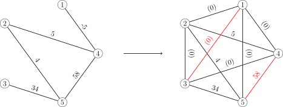
Obrnuto, problem najvećeg sparivanja maksimalne težine svodi se na problem sparivanja maksimalne težine. Dovoljno je težinama svih bridova grafa \(G\) dodati dovoljno velik pozitivan broj \(K\) pa je sparivanje maksimalne težine dobivenog grafa \(G'\) zajamčeno i najveće sparivanje, a time nužno najveće sparivanje maksimalne težine. Naime, računanje sparivanja maksimalne težine grafa \(G'\) odgovara maksimiziranju, preko svih sparivanja grafa \(G\), izraza
Kad je \(K\) dovoljno velik, dobitak \(K\) od jednog sparenog brida više premašuje promjenu zbroja težina u drugom članu. Stoga će algoritam najprije spariti što više bridova, a tek zatim maksimizirati zbroj težina sparenih bridova. Konstantu \(K\) dovoljno je odabrati tako da bude strogo veća od razlike zbroja težina bilo kojih dvaju sparivanja. Očit je izbor
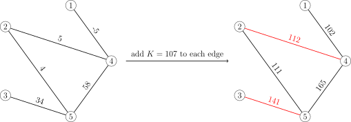
Minimalni (težinski) pokrivač bridovima
Još jedan problem usko povezan s najvećim sparivanjem (maksimalne težine) jest minimalni (težinski) pokrivač bridovima. Odnos pokrivača bridovima i sparivanja (zvanog i nezavisni skup bridova) sličan je odnosu pokrivača vrhovima i nezavisnog skupa.
Skup bridova \(C\subseteq E\) grafa \(G=(V,E)\) zove se pokrivač bridovima (edge cover) grafa \(G\) ako je svaki vrh \(v\in V\) kraj nekog brida iz \(C\). Pri razmatranju pokrivača bridovima uvijek pretpostavljamo da graf \(G\) nema izoliranih vrhova.
Za netežinske grafove problem minimalnog pokrivača bridovima gotovo je isto što i problem najvećeg sparivanja. Za bilo koje najveće sparivanje \(M\) grafa \(G\) dovoljno je svakom nesparenom vrhu dodati jedan susjedni brid pa dobivamo minimalni pokrivač bridovima \(C\). Njihove veličine zadovoljavaju jednostavan odnos \(|M|+|C|=|V|\). Na sljedećoj su slici neki primjeri minimalnih pokrivača bridovima:
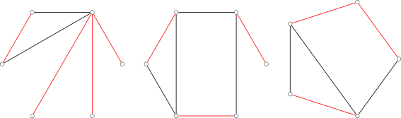
Za težinske grafove problem minimalnog težinskog pokrivača bridovima svodi se na problem savršenog sparivanja minimalne težine. Najprije kopiramo graf \(G=(V,E)\) i dobivamo \(\tilde G=(\tilde V,\tilde E)\) s istim težinama bridova; zatim svaki vrh \(v\in V\) povežemo s njegovom kopijom \(\tilde v\in\tilde V\) bridom čija je težina najmanja težina brida incidentnog s \(v\) u grafu \(G\). Dobiveni graf označimo \(G'=(V',E')\). Ako je \(G\) bipartitan ili rijedak graf, i \(G'\) je redom bipartitan odnosno rijedak. Pritom se problem minimalnog težinskog pokrivača bridovima grafa \(G\) svodi na problem savršenog sparivanja minimalne težine grafa \(G'\)2: za savršeno sparivanje minimalne težine \(M'\) grafa \(G'\) dovoljno je zadržati bridove iz \(E\) i sve sparene bridove \((v,\tilde v)\) zamijeniti bridom najmanje težine incidentnim s \(v\) u grafu \(G\) pa dobivamo minimalni težinski pokrivač bridovima grafa \(G\).
Literatura
- Wikiwand - Matching (graph theory)
- Wikiwand - Blossom algorithm
- Chen Yinbo, „Kratak pregled algoritama za sparivanje u grafovima i njihovih primjena”, 2015.
- Bilješke o algoritmima - Matching
- the-tourist/algo
- Bill Yang's Blog - Bilješke o blossom algoritmu
- Najveće sparivanje, savršeno sparivanje i mađarski algoritam u bipartitnim grafovima
- Wikiwand - Hopcroft–Karp algorithm
- Bondy, John Adrian, and Uppaluri Siva Ramachandra Murty. Graph theory with applications. Vol. 290. London: Macmillan, 1976.
-
Naravno, to nije jedini način svođenja. Za graf \(G=(V,E)\) možemo i njegovu kopiju \(\tilde G=(\tilde V,\tilde E)\) vrh po vrh povezati s izvornim grafom, a težine svih bridova novih u odnosu na izvorni graf \(G\) (uključujući bridove u kopiji) postaviti na \(0\), čime dobivamo graf \(G'=(V',E')\). Drugim riječima, skup vrhova novog grafa \(G'\) jest \(V\cup\tilde V\), a njegov skup bridova, osim bridova grafa \(G\), povezuje svaki vrh \(v\in V\) s njegovom kopijom \(\tilde v\in\tilde V\) bridom težine nula te za svaki brid \((u,v)\in E\) povezuje \(\tilde u\) i \(\tilde v\) bridom težine nula. Svakom sparivanju \(M\) grafa \(G\) odgovara savršeno sparivanje grafa \(G'\) istog zbroja težina: dovoljno je svaki nespareni vrh \(v\) grafa \(G\) spariti s njegovom kopijom \(\tilde v\), a za svaki spareni brid \((u,v)\) spariti \(\tilde u\) i \(\tilde v\). Stoga najveće sparivanje maksimalne težine grafa \(G'\), tj. savršeno sparivanje maksimalne težine, ograničeno na \(E\) daje sparivanje maksimalne težine grafa \(G\). Prednost je ovog svođenja što je, ako je \(G\) bipartitan ili rijedak graf, i prošireni graf \(G'\) redom bipartitan odnosno rijedak. ↩
-
Za svako savršeno sparivanje \(M'\) grafa \(G'\) ovdje opisanim postupkom dobivamo pokrivač bridovima \(C\) grafa \(G\) čiji je zbroj težina polovica zbroja težina od \(M'\); obrnuto, obrtanjem te konstrukcije, za svaki pokrivač bridovima \(C\) grafa \(G\) možemo konstruirati savršeno sparivanje \(M'\) grafa \(G'\) čiji zbroj težina ne premašuje dvostruki zbroj težina od \(C\). To pokazuje da svođenje vrijedi. ↩
Contents
Introduction
A matching or independent edge set is a set of edges of a graph that share no common endpoints. Graph matching algorithms are commonly used in informatics competitions and can roughly be divided into two kinds: maximum matching and maximum weight matching. Since matching in bipartite graphs is equivalent to a network flow problem, has nice properties and is relatively easy to handle, we first introduce both kinds of algorithms on bipartite graphs and then discuss algorithms for general graphs.
Matchings in a graph
Let \(G=(V,E)\) be an undirected graph, where \(V\) is the vertex set and \(E\) is the edge set. If a set of edges \(M\subseteq E\) contains no self-loops and no two of its edges share a vertex, then the edge set \(M\) is called a matching or independent edge set of the graph \(G\). An edge \(e\in E\) that appears in the matching \(M\) is called a matched edge, otherwise an unmatched edge. Correspondingly, a vertex \(v\in V\) that is an endpoint of a matched edge is called a matched vertex, otherwise an unmatched vertex.
The size of a matching \(M\) is the number of edges it contains. For matchings in (weighted) undirected graphs, the following concepts are often considered:
-
Maximal matching: a matching to which no further matched edge can be added. A maximal matching is not necessarily a maximum matching.
-
Maximum matching (or maximum cardinality matching): a matching with the largest number of matched edges. There may be more than one maximum matching, but the number of edges of a maximum matching is fixed, and it cannot exceed half the number of vertices of the graph.
-
Maximum weight matching: in a weighted graph, the matching with the largest sum of edge weights.
-
Maximum weight maximum cardinality matching: subject to the number of matched edges being maximum, the matching with the largest sum of edge weights. That is, among all maximum matchings, the one with the largest edge weight sum.
-
Perfect matching: a matching in which every vertex is matched. A perfect matching is always a maximum matching. A complete graph with an even number of vertices always has a perfect matching.
-
Near-perfect matching: a matching with exactly one unmatched vertex. This can only happen when the graph has an odd number of vertices. A near-perfect matching is also always a maximum matching. A complete graph with an odd number of vertices always has a near-perfect matching.
Graph matching problems in algorithm competitions mainly refer to the maximum matching or the maximum weight matching of a graph.
Augmenting paths
In graph matching algorithms, the augmenting path is the core structure used to improve a matching.
Definition
For a graph \(G=(V,E)\) and a matching \(M\) of it, we can define the following two kinds of (simple) paths:
- an alternating path is a path in which matched and unmatched edges alternate;
- an augmenting path is an alternating path that starts at an unmatched vertex and ends at an unmatched vertex.
Since an augmenting path has \(1\) more unmatched edge than matched edges, the number of edges in an augmenting path is always odd. If we flip the matched and unmatched edges on an augmenting path, it remains an alternating path, and the number of matched edges increases by \(1\). The process of finding an augmenting path and flipping it to increase the size of the matching is called augmentation. In mathematical terms, augmentation takes the symmetric difference of the matching \(M\) and the augmenting path \(P\), yielding the new matching \(M\oplus P\).
The figure below shows how, after one augmentation, the number of matched edges grows from \(2\) to \(3\).
Berge's lemma
Berge's lemma states that improving a matching via augmenting paths is sufficient. In other words, when no augmenting path can be found, a maximum matching has been obtained.
Berge's lemma
For a graph \(G=(V,E)\) and a matching \(M\) of it, \(M\) is a maximum matching if and only if there is no augmenting path with respect to \(M\).
Proof
We have already shown that when an augmenting path \(P\) exists, the matching \(M\oplus P\) is larger than \(M\), so \(M\) is certainly not a maximum matching.
Conversely, we need to show that if there is a matching \(M'\) larger than \(M\), then there must be an augmenting path \(P\) with respect to \(M\). To this end, consider the symmetric difference \(M\oplus M'\). The degrees of vertices in the graph \((V,M\oplus M')\) can only be \(0\), \(1\) or \(2\); the connected components of such a graph must be paths, cycles or isolated vertices. Moreover, the two edges adjacent to a vertex of degree \(2\) must come from different matchings, so in these cycles the number of edges from \(M\) equals the number from \(M'\). Since \(M'\) is larger than \(M\), there is at least one path with more edges from \(M'\) than from \(M\); call it \(P\). Then both endpoints of \(P\) are unmatched vertices of \(M\), and \(P\) is an alternating path with respect to \(M\), so \(P\) must be an augmenting path with respect to \(M\). This completes the proof.
From this theorem we obtain the core idea for finding a maximum matching:
- enumerate all unmatched vertices and look for augmenting paths until no augmenting path can be found.
In fact, after each augmentation there is no need to re-scan all unmatched vertices. Over the whole process of finding a maximum matching, each vertex needs to be processed only once.
Proof
It suffices to show that if, when the enumeration reaches vertex \(v\), there is no augmenting path starting at \(v\), then after any number of further augmentations there is still no augmenting path starting at \(v\). This means that even though augmentation changes the matching, the previously enumerated unmatched vertices need not be checked again.
Suppose otherwise. That is, suppose \(v\) is an already enumerated unmatched vertex, and after augmenting along an augmenting path \(P\) from \(u\) to \(w\) in some round, a new augmenting path \(P'\) starting at \(v\) appears that did not exist before. Then the path \(P'\) must share an edge with \(P\); otherwise augmenting along \(P\) would not change the matching status of the edges in \(P'\), and \(P'\) would not be an augmenting path newly created by this augmentation.
(In the figure, black denotes unmatched edges, and red and blue denote different matching states.)
Let \(x\) be the first vertex of \(P\) reached when walking from \(v\) along \(P'\). Since an alternating path from \(v\) to \(x\) already existed before this augmentation, and at that time there was no augmenting path starting at \(v\), \(x\) must be a matched vertex, and hence cannot be \(u\) or \(w\). Therefore, on the augmenting path \(P\) there are two edges adjacent to \(x\), and their matching states are opposite. This means that regardless of the matching state of the edge by which the alternating path starting at \(v\) reaches \(x\), the alternating path can be extended along \(P\) to either \(u\) or \(w\). Hence an augmenting path starting at \(v\) already existed before the augmentation, contradicting the assumption.
Alternating trees
Another concept closely related to augmenting paths is the alternating tree. It is the tree produced while searching for an augmenting path by DFS or BFS from an unmatched vertex \(r\).
For a graph \(G=(V,E)\) and a matching \(M\) of it, if a subgraph \(H\subseteq G\) is a tree rooted at an unmatched vertex \(r\), and the path connecting \(r\) to any \(v\in V(H)\) is an alternating path, then \(H\) is called an alternating tree. Vertices at even depth in the tree are called even vertices, and vertices at odd depth are called odd vertices.
The figure below shows an alternating tree that may be obtained by BFS from the unmatched vertex \(1\). (In the figure, red edges are matched edges and black edges are unmatched; dark vertices are matched and light vertices are unmatched.)
Existence of perfect matchings
In matching theory there are two important existence theorems that can be used to decide whether a perfect matching exists in a bipartite or general graph.
Hall's theorem
Suppose \(G=(X,Y,E)\) is a bipartite graph with \(|X|\le |Y|\). For a matching \(M\) of \(G\), if all vertices in \(X\) are matched, \(M\) is called an \(X\)-perfect matching, sometimes simply a perfect matching (of the bipartite graph \(G\)). This is the largest matching achievable in a bipartite graph. Hall's theorem provides a necessary and sufficient condition for the existence of such a matching.
Hall's theorem says that as long as, for every subset of \(X\), there are enough vertices in \(Y\) that can be matched to it, an \(X\)-perfect matching must exist.
Hall's theorem
Suppose \(G=(X,Y,E)\) is a bipartite graph with \(|X|\le |Y|\). For any \(W\subseteq X\), let \(N_G(W)\) denote the set of all vertices of \(G\) adjacent to a vertex in \(W\). Then an \(X\)-perfect matching exists if and only if \(|W|\le |N_G(W)|\) holds for all \(W\subseteq X\).
Proof
The condition is clearly necessary. Suppose an \(X\)-perfect matching \(M\) exists; then every vertex in \(X\) is matched to a distinct vertex in \(Y\). The set \(N_G(W)\) includes at least the vertices matched to vertices in \(W\), so its size is at least \(|W|\).
The condition is also sufficient. Suppose no \(X\)-perfect matching exists; then there is a maximum matching \(M\) in which some vertex \(v\in X\) is still unmatched. Let \(Z\) be the set of all vertices reachable via alternating paths starting from \(v\), and let \(S=Z\cap X\), \(T=Z\cap Y\). All vertices in \(S\setminus\{v\}\) must be matched, because \(G\) is bipartite, so an alternating path from \(v\) to a vertex in \(X\) has even length and its last edge must be a matched edge; all vertices in \(T\) must also be matched, since otherwise an augmenting path would exist, which by Berge's lemma contradicts \(M\) being maximum. Since they are all matched and matching can only happen between \(X\) and \(Y\), the vertices in \(S\setminus\{v\}\) and in \(T\) are in one-to-one correspondence, i.e. \(|T|=|S|-1\). Meanwhile, since the vertices in \(T\) are matched to vertices in \(S\), at least \(T\subseteq N_G(S)\); but for any \(u\in N_G(S)\), say adjacent to \(v'\) in \(S\), we can extend the alternating path reaching \(v'\) to an alternating path reaching \(u\), hence \(u\in T\): this shows \(T=N_G(S)\). These arguments show \(|N_G(S)|<|S|\), contradicting the hypothesis of Hall's theorem. Hence an \(X\)-perfect matching exists.
Corollary
Every \(k\)-regular (\(k\ge 1\)) bipartite graph has a perfect matching.
Proof
In a regular bipartite graph all vertices have the same degree, say \(k\ge 1\). First verify that Hall's condition holds, i.e. for any \(W\subseteq X\), \(|N_G(W)|\ge |W|\). The number of edges adjacent to vertices in \(W\) is \(k|W|\), and each vertex in \(N_G(W)\) is adjacent to at most \(k\) of them, so necessarily \(k|W|\le k|N_G(W)|\), i.e. \(|W|\le |N_G(W)|\). In particular, \(|X|\le |Y|\); since \(X\) and \(Y\) are symmetric, \(|X|=|Y|\). This shows that in a regular bipartite graph an \(X\)-perfect matching is also a perfect matching. Since Hall's theorem guarantees that an \(X\)-perfect matching exists, a perfect matching must exist as well.
Tutte's theorem
Tutte's theorem provides a necessary and sufficient condition for the existence of a perfect matching in a general graph. The condition stems from a direct observation: a graph with an odd number of vertices cannot have a perfect matching.
Tutte's theorem
A graph \(G=(V,E)\) has a perfect matching if and only if for every \(U\subseteq V\), \(\operatorname{odd}(G-U)\le |U|\), where \(G-U\) denotes the subgraph obtained from \(G\) by deleting the vertices in \(U\) and their incident edges, and \(\operatorname{odd}(G-U)\) denotes the number of connected components of \(G-U\) with an odd number of vertices.
Proof
It suffices to consider simple graphs, since multi-edges and self-loops affect neither Tutte's condition nor the existence of a perfect matching.
Necessity is relatively easy. Suppose a perfect matching \(M\) exists. For any \(U\subseteq V\), after deleting the vertices in \(U\) from \(G\), every connected component with an odd number of vertices has at least one vertex that cannot be matched with a vertex of the same component, and such vertices can only be matched with vertices in \(U\). For such a matching to exist, we need at least \(\operatorname{odd}(G-U)\le |U|\). This is Tutte's condition.
Sufficiency is more involved. Suppose \(G\) satisfies Tutte's condition but has no perfect matching. Since adding any edge to \(G\) keeps Tutte's condition satisfied, we may assume \(G\) is a maximal such graph, i.e. \(G\) has no perfect matching, but adding any edge \(e\) not yet present makes \(G+e\) have a perfect matching. Let \(U\subseteq V\) be the set of all vertices of degree \(|V|-1\). One can prove that every connected component of \(G-U\) is a complete graph. From this, a perfect matching of \(G\) can be constructed: first take a maximum matching of each connected component of \(G-U\), so that an unmatched vertex appears only when the component has an odd number of vertices; match these unmatched vertices to vertices in \(U\); since the number of vertices of \(G\) is even (take \(U=\varnothing\) in Tutte's condition), the number of remaining unmatched vertices in \(U\) is also even, so pair them up. This contradiction shows that no \(G\) satisfies Tutte's condition yet has no perfect matching.
The key is to prove that every connected component of \(G-U\) is a complete graph. Suppose not. Let vertices \(x,y,z\) belong to such a component with \((x,y)\in E\), \((y,z)\in E\), \((x,z)\notin E\). Moreover, since \(y\notin U\), there must be \(w\in V\setminus U\) with \((y,w)\notin E\). By the maximality of \(G\), the graphs \(G+(x,z)\) and \(G+(y,w)\) have perfect matchings \(M_1\) and \(M_2\) respectively. Consider their symmetric difference \(M_1\oplus M_2\). Since all vertex degrees in the graph \((V,M_1\oplus M_2)\) are either \(0\) or \(2\), \(M_1\oplus M_2\) is in fact a disjoint union of even cycles, each consisting of alternating matched edges from \(M_1\) and \(M_2\). We may assume \((x,z)\in M_1\) and \((y,w)\in M_2\), since otherwise \(M_1\) or \(M_2\) is already a perfect matching of \(G\); hence both edges appear in \(M_1\oplus M_2\).
As shown in the figure, there are two cases:
- \((x,z)\) and \((y,w)\) lie on different cycles (left): let \(C\) be the cycle containing \((y,w)\); then the edge set \(M_2\oplus C\) is a perfect matching of \(G\);
- \((x,z)\) and \((y,w)\) lie on the same cycle (right): by symmetry, assume the cycle passes through \(x,y,w,z\) in this order, so we can take the path \(P\) on the cycle from \(y\) via \(w\) to \(z\), denote \(\{(y,z)\}\cup P\) as the cycle \(C\), and then the edge set \(M_2\oplus C\) is likewise a perfect matching of \(G\).
Either case contradicts the choice of \(G\). This contradiction shows that every connected component of \(G-U\) is a complete graph.
Corollary
Every bridgeless 3-regular graph has a perfect matching.
Proof
To verify Tutte's condition, take any \(U\subseteq V\); we need to prove \(\operatorname{odd}(G-U)\le |U|\). Let \(G_1,\cdots,G_n\) be all connected components of \(G-U\) with an odd number of vertices. Let \(m_i\) be the number of edges connecting vertices of \(G_i\) to vertices of \(U\). Simple counting gives
Hence \(m_i\) must be odd. Since \(G\) has no bridges (i.e. cut edges), \(m_i\ge 3\). This shows
Therefore Tutte's condition holds and \(G\) must have a perfect matching.
Common algorithms
A basic problem in combinatorial optimization is finding the maximum matching and the maximum weight matching of a graph.
Maximum bipartite matching
See the page Maximum bipartite matching.
In an unweighted bipartite graph, the problem can be solved with Kuhn's algorithm in \(O(|V||E|)\) time, or with the Hopcroft–Karp algorithm in \(O(|V|^{1/2}|E|)\) time.
Maximum weight bipartite matching
See the page Maximum weight bipartite matching.
In a weighted bipartite graph, the problem can be solved with the Hungarian algorithm. If the Bellman–Ford algorithm is used to find shortest paths, the time complexity is \(O(|V|^2|E|)\); using Dijkstra's algorithm with a Fibonacci heap, it can be solved in \(O(|V|^{2}\log {|V|}+|V||E|)\) time.
Maximum matching in general graphs
See the page Maximum matching in general graphs.
In an unweighted general graph, the problem can be solved with Edmonds' blossom algorithm in \(O(|V|^2|E|)\) time.
Maximum weight matching in general graphs
See the page Maximum weight matching in general graphs.
In a weighted general graph, the problem can be solved with Edmonds' blossom algorithm in \(O(|V|^2|E|)\) time.
Related problems
Maximum (weight) matching is closely connected to other graph-theoretic problems. This section only discusses general graphs; for results on bipartite graphs see the page Maximum bipartite matching.
Maximum weight maximum cardinality matching
The maximum weight maximum cardinality matching problem and the maximum weight matching problem reduce to each other. A notable difference between them is that negative-weight edges may appear in a maximum weight maximum cardinality matching, but never in a maximum weight matching.
First, the maximum weight matching problem reduces to the maximum weight maximum cardinality matching problem. To do this, first set the weights of all negative edges of \(G\) to \(0\); then extend the graph to a complete graph \(G'\) by adding edges of weight \(0\). Note that in a complete graph with non-negative edge weights, the maximum weight maximum cardinality matching and the maximum weight matching coincide. So it suffices to compute the maximum weight maximum cardinality matching \(M'\) of \(G'\) and delete all zero-weight edges from \(M'\); the resulting edge set \(M\) is a maximum weight matching of \(G\).1
Conversely, the maximum weight maximum cardinality matching problem reduces to the maximum weight matching problem. It suffices to add a sufficiently large positive number \(K\) to the weights of all edges of \(G\); then the maximum weight matching of the resulting graph \(G'\) is guaranteed to be a maximum matching, and hence necessarily a maximum weight maximum cardinality matching. This is because computing the maximum weight matching of \(G'\) amounts to maximizing, over all matchings of \(G\),
When \(K\) is large enough, the gain \(K\) from matching one more edge exceeds the change in the weight sum of the second term. Therefore the algorithm first matches as many edges as possible and only then maximizes the weight sum of the matched edges. The constant \(K\) just needs to be strictly larger than the difference between the weight sums of any two matchings. An obvious choice is
Minimum (weight) edge cover
Another problem closely related to maximum (weight) matching is the minimum (weight) edge cover. The relationship between edge covers and matchings (also called edge independent sets) is similar to that between vertex covers and independent sets.
A set of edges \(C\subseteq E\) of a graph \(G=(V,E)\) is called an edge cover of \(G\) if every vertex \(v\in V\) is an endpoint of some edge in \(C\). When discussing edge covers, we always assume that \(G\) has no isolated vertices.
For unweighted graphs, the minimum edge cover problem is almost the same as the maximum matching problem. For any maximum matching \(M\) of \(G\), adding one incident edge for every unmatched vertex yields a minimum edge cover \(C\). Their sizes satisfy the simple relation \(|M|+|C|=|V|\). The figure below shows some examples of minimum edge covers:
For weighted graphs, the minimum weight edge cover problem reduces to a minimum weight perfect matching problem. First, make a copy of \(G=(V,E)\) to obtain \(\tilde G=(\tilde V,\tilde E)\) with the same edge weights; then connect every vertex \(v\in V\) to its copy \(\tilde v\in\tilde V\) with an edge whose weight is the minimum weight of the edges incident to \(v\) in \(G\). Denote the resulting graph by \(G'=(V',E')\). If \(G\) is bipartite or sparse, then \(G'\) is likewise bipartite or sparse, respectively. Moreover, the minimum weight edge cover problem of \(G\) reduces to the minimum weight perfect matching problem of \(G'\)2: given a minimum weight perfect matching \(M'\) of \(G'\), keep the edges in \(E\) and replace every matched \((v,\tilde v)\) with the minimum-weight edge incident to \(v\) in \(G\); this yields a minimum weight edge cover of \(G\).
References
- Wikiwand - Matching (graph theory)
- Wikiwand - Blossom algorithm
- Chen Yinbo, "A brief discussion of graph matching algorithms and their applications", 2015.
- Algorithm Notes - Matching
- the-tourist/algo
- Bill Yang's Blog - Blossom algorithm notes
- Maximum matching, perfect matching and the Hungarian algorithm in bipartite graphs
- Wikiwand - Hopcroft–Karp algorithm
- Bondy, John Adrian, and Uppaluri Siva Ramachandra Murty. Graph theory with applications. Vol. 290. London: Macmillan, 1976.
-
Of course, this is not the only reduction. For a graph \(G=(V,E)\), one can also attach a copy \(\tilde G=(\tilde V,\tilde E)\) of it to the original graph vertex by vertex, and set the weights of all edges new relative to the original graph \(G\) (including the edges in the copy) to \(0\), obtaining a graph \(G'=(V',E')\). In other words, the vertex set of the new graph \(G'\) is \(V\cup\tilde V\), and its edge set, besides the edges of \(G\), connects every vertex \(v\in V\) to its copy \(\tilde v\in\tilde V\) by a zero-weight edge, and for every edge \((u,v)\in E\) connects \(\tilde u\) and \(\tilde v\) by a zero-weight edge. Every matching \(M\) of \(G\) corresponds to a perfect matching of \(G'\) with the same weight sum: just match every unmatched vertex \(v\) of \(G\) with its copy \(\tilde v\), and for every matched edge \((u,v)\) match \(\tilde u\) with \(\tilde v\). Therefore the maximum weight maximum cardinality matching of \(G'\), i.e. its maximum weight perfect matching, restricted to \(E\) gives a maximum weight matching of \(G\). The advantage of this reduction is that if \(G\) is bipartite or sparse, the extended graph \(G'\) is likewise bipartite or sparse, respectively. ↩
-
For every perfect matching \(M'\) of \(G'\), the construction described here yields an edge cover \(C\) of \(G\) whose weight sum is half that of \(M'\); reversing the construction, for every edge cover \(C\) of \(G\) one can construct a perfect matching \(M'\) of \(G'\) whose weight sum is at most twice that of \(C\). This shows that the reduction is valid. ↩